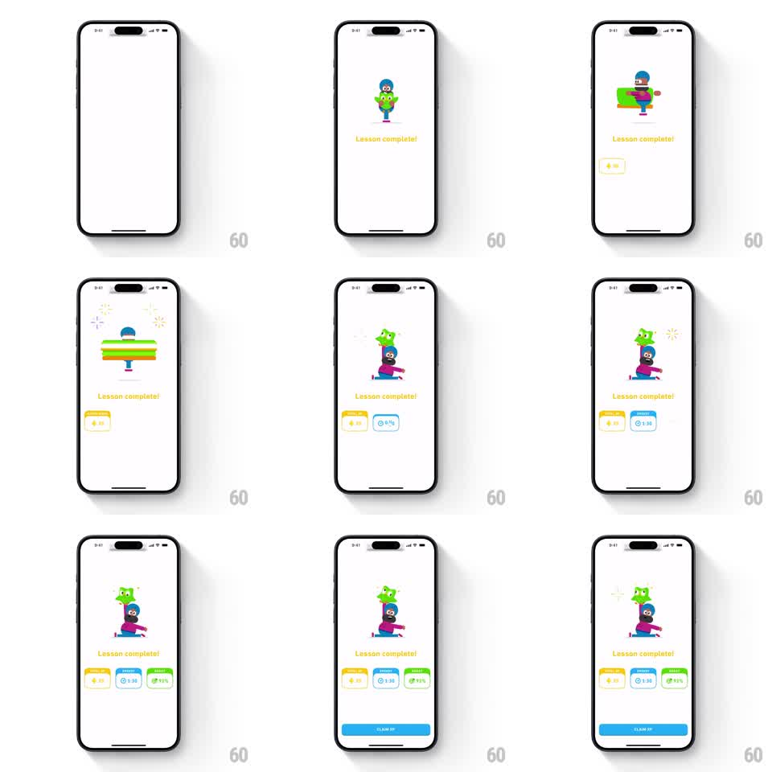

Media
Frame-by-frame

Rebuild this animation 1:1: Duolingo's lesson-complete celebration - a mascot hoists Duo overhead, balances him while holding furniture aloft, then settles into a stretch pose with Duo perched on her head as stat cards pop in along the bottom and a CLAIM XP button lands.

Rebuild this animation 1:1: Duolingo's lesson-complete celebration - a mascot hoists Duo overhead, balances him while holding furniture aloft, then settles into a stretch pose with Duo perched on her head as stat cards pop in along the bottom and a CLAIM XP button lands. ## Integration Integration: stack-agnostic spec - springs given as stiffness/damping, timed motions as duration + curve; map every value to your framework and animation library of choice. ## Scene White success screen. Center: a human mascot and Duo performing a lifting routine. Yellow "Lesson complete!" headline below. Bottom stat card row: yellow XP card, blue timer card, green accuracy card. A full-width blue CLAIM XP button arrives last. ## Motion spec Pattern: looping character lift with staggered stat card pops. - The pair enters with a hop (translateY 30px to 0, spring stiffness ~280, damping ~18) as the headline fades in (200ms). - The lift loop: the mascot raises Duo overhead over ~500ms, holds with a small bounce, then swaps to hoisting a long green object (a couch) as sparkles pop around it (4-point stars, scale 0 to 1, 150ms each). - The loop settles into a lunge/stretch pose with Duo balanced on her head; Duo wobbles once (rotation +-6deg, 300ms). - Stat cards pop in left to right, ~120ms apart: scale 0.5 to 1.0, spring stiffness ~320, damping ~20, and each card's value counts up to the final number over ~400ms after landing. - CLAIM XP slides up from the bottom edge last (translateY 100% to 0, 300ms, ease-out), after every card has landed. ## Calibration - The character loop is the show - cards must not start until the first lift completes. - Value count-ups happen inside already-landed cards; do not animate the card and its number as separate beats. ## Reduced motion Static final pose; all elements fade in together over 200ms; numbers render final. ## Don't miss - The mascot changes props across the loop (Duo, couch, back to Duo) - it is a routine, not a single lift. - The CTA is the last element to arrive; the celebration reads top to bottom.